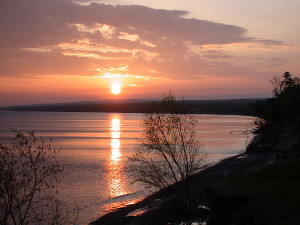
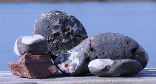

The Keweenaw Peninsula is located at the top of Michigan's Upper Peninsula where it juts out into the southern portion of Lake Superior. It has interesting history, unique geology, is stunningly beautiful, and has a multitude of recreational opportunities.
Beautiful Scenery

Sunrise at McLain State Park
The area is sparsely populated and has small mountains, large waterfalls, and dense woods. The west and north shores seem to be rocky, while those along the eastern and southern areas have some beautiful sand beaches.
Redwyn Dunes in the Keweenaw Peninsula.
The Redwyn Dunes Nature Sanctuary lies on the northwest side of the Keweenaw Peninsula. The sand dunes are located off of M-26 just north of Eagle River. The area is part of the Great Sand Bay and there is a one mile hiking trail for you to explore.
Interesting Geology

Rocks from the Keweenaw Peninsula
The Keweenaw sits atop some of the oldest rock on the planet and It holds one of the largest deposits of copper in the world
History
The discovery of copper in the mid 1800s brought a rush of people to the area. Calumet at one time had a population of over 30,000 people and its own opera house. The copper ran out and the population decreased. Today there are two colleges in the area (Michigan Tech and Finlandia University) in the sister cities of Houghton and Hancock.
Plethora of Recreational Activities
The Keweenaw Peninsula holds a lot of opportunities for an outdoor enthusiast. Check out the list below: